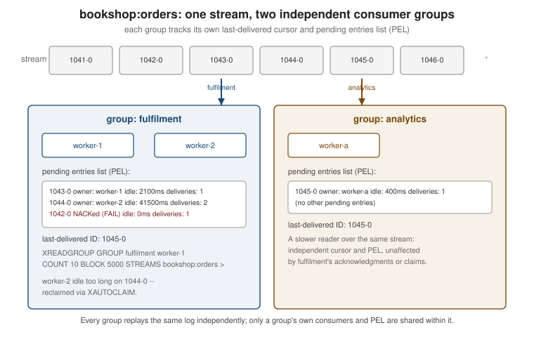

Streams, Pub/Sub & Keyspace Notifications
|
This content was generated with the assistance of AI and should be verified against the official documentation before being relied on in production. |
Examples on this page target Redis Open Source 8.10 (8.10.2) with the Jedis 8 and Lettuce 7.7 client
libraries. Streams and Pub/Sub are Redis’s two built-in messaging primitives, and they sit at opposite ends of
the delivery-guarantee spectrum: a stream is a persisted, replayable log that consumer groups read from with
explicit acknowledgment, while a Pub/Sub message is broadcast once, to whoever happens to be listening, and is
gone the instant it is delivered. Keyspace notifications reuse the Pub/Sub transport to turn ordinary key
changes — a SET, an HDEL, a field expiring — into messages of their own.
Streams: an append-only log
A Redis stream is an append-only log of entries, each with a unique, monotonically increasing ID and a set of field/value pairs, stored under a single key. Unlike a list, entries are never popped by reading them, so several independent readers — or several consumer groups — can each replay the same log at their own pace.
XADD appends an entry, auto-creating the stream on first use:
127.0.0.1:6379> XADD bookshop:orders * order_id 1042 isbn 9780000000001 qty 2
"1758800000000-0"-
XADD key [NOMKSTREAM] [KEEPREF \| DELREF \| ACKED] [IDMPAUTO producer-id \| IDMP producer-id idempotent-id] [<MAXLEN \| MINID> [= \| ~] threshold [LIMIT count]] <* \| id> field value [field value …]—NOMKSTREAM(since 6.2) skips creating the stream ifkeydoesn’t exist yet, instead of the default auto-create behaviour.MAXLEN/MINIDcap the stream size or evict entries older than a given ID in the same call that appends the new one —~trims approximately (cheaper) instead of exactly. Since Redis 8.6,IDMP producer-id idempotent-idandIDMPAUTO producer-idmake the append idempotent: a repeat call with the same producer/idempotent-id pair returns the original entry’s ID instead of creating a duplicate, giving at-most-once production without an application-side dedupe table. See XADD.
127.0.0.1:6379> XADD bookshop:orders MAXLEN ~ 100000 * order_id 1043 isbn 9780000000002 qty 1
"1758800000010-0"
127.0.0.1:6379> XADD bookshop:orders IDMP order-service order-1043-attempt-1 * order_id 1043 isbn 9780000000002 qty 1
"1758800000010-0"Reading back a known ID range uses XRANGE key start end [COUNT count] (oldest to newest) or its mirror
XREVRANGE key end start [COUNT count] (newest to oldest); - and + mean "the lowest possible ID" and "the
highest possible ID". See XRANGE and
XREVRANGE.
XREAD follows a stream forward from a given ID, optionally blocking until new entries arrive:
-
XREAD [COUNT count] [MAXCOUNT maxcount] [MAXSIZE maxsize] [BLOCK milliseconds] STREAMS key [key …] id [id …]— the special ID$means "only entries added after this call" (used on the first blocking read), and, since Redis 7.4,+means "just the last entry". Since Redis 8.10,MAXCOUNT/MAXSIZEcap the total reply across every stream named in the call, whereCOUNTonly caps entries per stream — useful whenXREADfans out over several streams at once and the per-stream count alone can’t bound the combined reply size. See XREAD.
127.0.0.1:6379> XREAD COUNT 10 BLOCK 5000 STREAMS bookshop:orders $Consumer groups
A consumer group turns a stream into a work queue: the entries are partitioned across the group’s consumers
instead of each consumer seeing every entry, and every delivery is tracked in a per-group Pending Entries List
(PEL) until it is acknowledged. XGROUP CREATE key group <$ \| id> [MKSTREAM] creates a group starting either
at the stream’s current end ($) or at a specific ID; MKSTREAM creates the stream itself if it doesn’t yet
exist. See XGROUP CREATE.
127.0.0.1:6379> XGROUP CREATE bookshop:orders fulfilment $ MKSTREAM
OKXREADGROUP is the consumer-group counterpart of XREAD:
-
XREADGROUP GROUP group consumer [COUNT count] [MAXCOUNT maxcount] [MAXSIZE maxsize] [BLOCK milliseconds] [CLAIM min-idle-time] [NOACK] STREAMS key [key …] id [id …]— the special ID>means "only entries never delivered to any consumer in this group"; any other ID reads back that consumer’s own pending entries.MAXCOUNT/MAXSIZE(8.10) work the same way as onXREAD. Since Redis 8.4,CLAIM min-idle-timefolds message reclaiming into the read itself: alongside new (>) entries, it also claims entries from any consumer in the group that have been pending for at leastmin-idle-timemilliseconds, oldest-idle-first, before falling back to genuinely new entries.NOACKskips the PEL entirely, trading the delivery guarantee for one less round trip. See XREADGROUP.
127.0.0.1:6379> XREADGROUP GROUP fulfilment worker-1 COUNT 10 BLOCK 5000 STREAMS bookshop:orders >Reading via redis-cli like this is enough to see the shape of a delivery, but a real fulfilment worker reads in a loop and acknowledges what it has durably processed. In Lettuce:
package com.example.bookshop.fulfilment;
RedisCommands<String, String> commands = connection.sync();
commands.xgroupCreate(XReadArgs.StreamOffset.from("bookshop:orders", "0"), "fulfilment");
List<StreamMessage<String, String>> messages = commands.xreadgroup(
Consumer.from("fulfilment", "worker-1"),
XReadArgs.Builder.block(Duration.ofSeconds(5)).count(10),
XReadArgs.StreamOffset.lastConsumed("bookshop:orders"));
for (StreamMessage<String, String> message : messages) {
fulfilOrder(message.getBody());
commands.xack("bookshop:orders", "fulfilment", message.getId());
}See XREADGROUP for the command this wraps.
XACK key group id [id …] removes one or more entries from the group’s PEL once processing has been
confirmed as complete. See XACK.
Since Redis 8.8, XNACK key group <SILENT \| FAIL \| FATAL> IDS numids id [id …] [RETRYCOUNT count]
[FORCE] gives a consumer a way to hand an entry back to the group without acknowledging it — the opposite
of XACK. SILENT is for a failure unrelated to the message itself (a graceful shutdown, a transient
internal error) and decrements the delivery counter as if the read hadn’t happened; FAIL leaves the counter
unchanged, for a message this consumer just couldn’t handle but another might; FATAL pins the counter to its
maximum, marking a malformed or suspect entry so it stops being redelivered as routine. A NACKed entry becomes
immediately claimable by another consumer, ahead of ordinary idle entries. See
XNACK.
127.0.0.1:6379> XNACK bookshop:orders fulfilment FAIL IDS 1 1758800000010-0
(integer) 1XPENDING key group [start end count [consumer]] inspects the PEL: called with just key group it returns a
summary (count, ID range, per-consumer counts); with a range and count it lists the individual pending
entries, each with its owning consumer, idle time, and delivery count. See
XPENDING.
When a consumer dies mid-processing, its entries sit in the PEL until someone else takes ownership:
-
XCLAIM key group consumer min-idle-time id [id …] [IDLE ms] [TIME unix-time-milliseconds] [RETRYCOUNT count] [FORCE] [JUSTID] [LASTID lastid]— explicitly reassigns the named entries toconsumer, but only those idle for at leastmin-idle-time;JUSTIDreturns just the claimed IDs without re-fetching the bodies. See XCLAIM. -
XAUTOCLAIM key group consumer min-idle-time start [COUNT count] [JUSTID]is the scan-based counterpart: instead of naming IDs up front, it walks the PEL fromstartand claims whatever it finds idle enough, in one call — the usual shape for a periodic "sweep for abandoned work" job. See XAUTOCLAIM.
127.0.0.1:6379> XAUTOCLAIM bookshop:orders fulfilment worker-2 60000 0-0 COUNT 10Since Redis 8.2, XDELEX and XACKDEL extend plain XDEL with the same KEEPREF/DELREF/ACKED vocabulary
XADD’s trimming uses: `XDELEX key <KEEPREF \| DELREF \| ACKED> IDS numids id [id …] deletes entries from
the stream while choosing whether consumer-group PEL references to them are kept, dropped, or only dropped
once every group has acknowledged them; XACKDEL does the same but also acknowledges the entries for the
named group in the same atomic call, folding a XACK and a delete into one round trip. See
XDELEX and
XACKDEL.

Delivery guarantees, briefly compared with Kafka
A stream with a consumer group gives at-least-once delivery: an entry stays in the PEL, and so remains
claimable, until it is acknowledged, so a crashed consumer’s work is picked up rather than lost — the same
guarantee Kafka’s consumer-group offset commits provide. The comparison stops there, though: a stream has no
built-in partitioning (every consumer in a group can be assigned entries from the whole key, not a fixed
subset), no cross-broker replication protocol of its own beyond ordinary Redis replication, and no long-term
retention story beyond MAXLEN/MINID trimming — Kafka is built around durable, partitioned, long-retained
logs first. Spring Boot: Other Messaging Options covers Kafka (and other Spring
Boot messaging options) in depth; this page only contrasts the delivery semantics.
Pub/Sub
Pub/Sub is Redis’s other messaging primitive, and a much simpler one: a publisher sends a message to a named channel, and every client currently subscribed to that channel (or to a matching glob pattern) receives it. There is no persistence, no PEL, and no replay — a client that isn’t connected at the moment a message is published simply never sees it. See Redis Pub/sub.
-
PUBLISH channel message— sendsmessageto every current subscriber ofchannel. See PUBLISH. -
SUBSCRIBE channel [channel …]/PSUBSCRIBE pattern [pattern …]— subscribe to one or more exact channels, or to a glob-style pattern (news.*matchesnews.art,news.music, and so on). See SUBSCRIBE and PSUBSCRIBE.
127.0.0.1:6379> SUBSCRIBE bookshop:invalidate
Reading messages... (press Ctrl-C to quit)
1) "subscribe"
2) "bookshop:invalidate"
3) (integer) 1127.0.0.1:6379> PUBLISH bookshop:invalidate "bookshop:cache:book:9780000000001"
(integer) 1In a Redis Cluster, a plain PUBLISH is broadcast to every node so any client can subscribe anywhere, which
means every message crosses the whole cluster bus regardless of how many subscribers actually want it. Since
Redis 7.0, sharded Pub/Sub gives cluster deployments a cheaper alternative: SPUBLISH shardchannel message
and SSUBSCRIBE shardchannel [shardchannel …] route a shard channel to the same slot its name would hash to
as a key, so a message only propagates within that slot’s shard instead of to every node. See
SPUBLISH and
SSUBSCRIBE.
A client that has opted into RESP3 (via HELLO 3) receives Pub/Sub messages as an out-of-band push type
rather than folded into the ordinary RESP2 reply stream, and — unlike a RESP2 subscribed client, which may
issue only a handful of Pub/Sub-related commands while subscribed — a RESP3 client can freely interleave
ordinary commands with subscriptions on the same connection. Jedis and Lettuce both negotiate RESP3
transparently when the server supports it, so application code doesn’t branch on the protocol version.
Pub/Sub vs. Streams for delivery guarantees
Pub/Sub is at-most-once: a message is delivered zero or one times, with no record kept once it’s sent, which is exactly right for a notification nobody needs to catch up on later — a cache invalidation being the canonical case, since a missed one just means a slightly longer staleness window rather than a correctness bug. A stream with a consumer group is at-least-once and durable, the right choice when losing a message (an order, a payment event) is not acceptable and reprocessing is safe. Choosing between them is really choosing whether "gone the moment nobody’s listening" is acceptable for a given message.
Keyspace and subkey notifications
Keyspace notifications turn ordinary write commands into Pub/Sub messages, without any application code having
to publish them explicitly. They’re disabled by default (publishing them costs a small amount of CPU on every
write) and are turned on with the notify-keyspace-events config value, a string of single-character flags:
| Flag | Enables |
|---|---|
|
Key-space notifications, published on |
|
Key-event notifications, published on |
|
Generic, non-type-specific commands ( |
|
String commands. |
|
List / Set / Hash / Sorted-set / Stream commands. |
|
Expired events / evicted events ( |
|
New-key events / key-miss events (not included in |
|
Overwritten events / type-changed events (not included in |
|
Shorthand for |
At least one of K or E must be present or nothing is delivered, regardless of the rest of the string. See
Redis keyspace notifications.
Most event names are self-explanatory (set, hset, expired, del, …), but two are worth calling out
because they’re easy to miss: an overwritten event fires whenever a key’s value is replaced wholesale
(a SET on an existing key, for instance) rather than merely modified, and a type_changed event fires when
the replacement value is a different Redis type than the key held before — both were added in Redis 8.2, and
neither is included in the A shorthand, so they need the explicit o/c flags.
Since Redis 8.8, subkey notifications extend the same mechanism below the key level: a notification for a
hash field, a JSON path, or an array element carries the specific subkey affected, not just the key name. The
most relevant instance for streams-adjacent work is hexpired, fired when an individual hash field’s own TTL
(set with HEXPIRE — see Hashes) elapses and the field is removed, independent of
any expiration on the hash key itself.
127.0.0.1:6379> CONFIG SET notify-keyspace-events KEA
OK
127.0.0.1:6379> PSUBSCRIBE "__key*__:*"Cache invalidation with keyspace notifications
Publishing an application-level message on bookshop:invalidate (as shown above) and relying on keyspace
notifications are two ways to reach the same goal — telling every interested instance that a piece of cached
data just changed — and Near-Far Caches already covers this pattern in depth
for a Spring Boot near/far cache, including its at-most-once caveat and why a short TTL should stay as a
backstop underneath it. The diagram below shows the same idea end to end: a write on one instance changes a
key, Redis emits a keyspace event, and every subscribed instance evicts its own local copy.
Related pages
-
Hashes —
HEXPIREand the field-levelhexpiredevent referenced above. -
Use Cases & Patterns — Streams and Pub/Sub in the context of the broader caching, session-store, and messaging patterns Redis is used for.
-
Near-Far Caches — near/far cache invalidation built on Pub/Sub and keyspace notifications, covered in depth rather than repeated here.
-
Spring Boot: Other Messaging Options — Kafka and the rest of Spring Boot’s messaging surface, for the fuller delivery-guarantee picture only summarized above.
References
-
Redis Streams — overview and consumer-group model.
-
Redis Pub/sub — overview, delivery semantics, and sharded Pub/Sub.
-
Redis keyspace notifications —
notify-keyspace-eventsflags and the events each command generates. -
Redis subkey notifications — per-field/path/element notifications, including
hexpired.